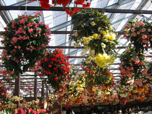
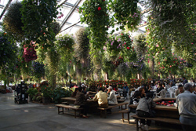
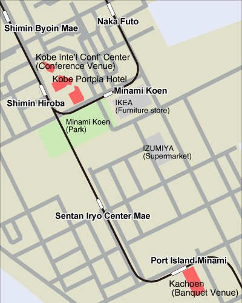

Social Program
Shakuhachi Concert (Tuesday, October 27, 18:00)
Special concert event will be held in the International Conference Room just before the reception.
See Music Performances page for more information.
Reception (Tuesday, October 27, 18:15)
The ISMIR 2009 reception on Tuesday 27 will take place
in the International Conference Room and the Reception Hall, directly following the concert.
Snacks and various beverages including locally-brewed Japanese
sake (rice wine) will be provided in the Reception Hall, making it the
perfect place to get acquainted with other participants.
In the International Conference Room, the Shakuhachi concert
will go on during the first half of the reception.
Participants who would like to listen to the Shakuhachi performance
should feel free to stay in the International Conference Room.
Banquet (Thursday, October 29, 19:30)
The conference banquet will be held at the Kobe Kachoen (the name means "Bird and Flower Park"),
located at the south end of the Port Island.
You will enjoy a buffet-style dinner in the park surrounded by the various colorful flowers.
You may also enjoy bird exhibits, including owls, waterfowls and penguins.
The banquet will feature a Japanese "Taiko" (drums) performance by the "Maturi-shu",
a Kyoto-based Taiko performance group.
See Music Performances pages for more information.


Photo courtsey of Jnn and 663highland from Wikipedia
Photo courtsey of Jnn and 663highland from Wikipedia
Access to banquet venue
By Bus
Charter bus transportation will be provided from the Conference Center to Kachoen
before the banquet and from Kachoen to Kobe Portopia Hotel (not the Conference
Center) after the banquet. Each ride will take approximately 10 minutes.
To Kachoen:
The buses will leave the Conference Center at 18:40 and at 19:10. You will be able to arrive in time for the banquet on any bus. The pick-up will be at the north side of the Conference Center building. To get to the buses, exit the building through the main entrance on the second floor and go down the slope on your right.
The buses will leave the Conference Center at 18:40 and at 19:10. You will be able to arrive in time for the banquet on any bus. The pick-up will be at the north side of the Conference Center building. To get to the buses, exit the building through the main entrance on the second floor and go down the slope on your right.
From Kachoen:
The buses will leave Kachoen at 22:00 and at 22:30.
By Port Liner
Kobe Kachoen is just in front of the "Port Island Minami" station of the Port Liner line.
It takes approx. 4 minutes from the "Shimin Hiroba" station to the "Port Island Minami" station
by trains bound for "Kobe Airport".
Note that trains bound for the "Sannomiya" station via "Kita Futo" will not
reach the Port Island Minami station.
When returning to the conference venue and the hotel,
you should take a train bound for "Sannomiya" station and get off at the "Shimin Hiroba" station.
Timetable from "Shimin Hiroba" to "Port Island Minami" (Excerpt)
| Hour | Minutes |
| 18 | 04 06 14 22 30 38 46 54 |
| 19 | 02 10 18 26 34 42 50 58 |
| 20 | 06 14 30 40 50 |
Timetable from "Port Island Minami" to "Shimin Hiroba" (Excerpt)
| Hour | Minutes |
| 21 | 04 14 24 34 44 54 |
| 22 | 04 16 27 42 57 |
| 23 | 12 27 49 |